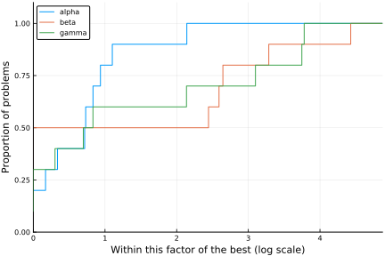

Tutorial
In this tutorial we illustrate the main uses of SolverBenchmark.
First, let's create fake data. It is imperative that the data for each solver be stored in DataFrames, and the collection of different solver must be stored in a dictionary of Symbol to DataFrame.
In our examples we'll use the following data.
using DataFrames, Printf, Random
Random.seed!(0)
n = 10
names = [:alpha, :beta, :gamma]
stats = Dict(name => DataFrame(:id => 1:n,
:name => [@sprintf("prob%03d", i) for i = 1:n],
:status => map(x -> x < 0.75 ? :success : :failure, rand(n)),
:f => randn(n),
:t => 1e-3 .+ rand(n) * 1000,
:iter => rand(10:10:100, n),
:irrelevant => randn(n)) for name in names)Dict{Symbol,DataFrames.DataFrame} with 3 entries:
:alpha => 10×7 DataFrames.DataFrame…
:beta => 10×7 DataFrames.DataFrame…
:gamma => 10×7 DataFrames.DataFrame…The data consists of a (fake) run of three solvers alpha, beta and gamma. Each solver has a column id, which is necessary for joining the solvers (names can be repeated), and columns name, status, f, t and iter corresponding to problem results. There is also a column irrelevant with extra information that will not be used to produce our benchmarks.
Here are the statistics of solver alpha:
stats[:alpha]| id | name | status | f | t | iter | irrelevant | |
|---|---|---|---|---|---|---|---|
| Int64 | String | Symbol | Float64 | Float64 | Int64 | Float64 | |
| 1 | 1 | prob001 | failure | -0.688907 | 62.3686 | 70 | 0.891315 |
| 2 | 2 | prob002 | failure | -0.762804 | 353.13 | 10 | -2.29449 |
| 3 | 3 | prob003 | success | 0.397482 | 767.603 | 10 | -1.17303 |
| 4 | 4 | prob004 | success | 0.81163 | 43.142 | 80 | -0.879915 |
| 5 | 5 | prob005 | success | -0.346355 | 267.986 | 30 | -0.494043 |
| 6 | 6 | prob006 | success | -0.187573 | 66.8474 | 80 | 0.511959 |
| 7 | 7 | prob007 | success | -1.60726 | 156.638 | 60 | -0.758701 |
| 8 | 8 | prob008 | success | -2.48079 | 605.298 | 40 | -0.76796 |
| 9 | 9 | prob009 | success | 2.27623 | 135.746 | 40 | -0.0303032 |
| 10 | 10 | prob010 | failure | 0.219693 | 838.119 | 50 | -1.31924 |
Tables
The first thing we may want to do is produce a table for each solver. Notice that the solver result is already a DataFrame, so there are a few options available in other packages, as well as simply printing the DataFrame. Our concern here is two-fold: producing publication-ready LaTeX tables, and web-ready markdown tables.
The simplest use is foo_table(io, dataframe). Here is printout to the stdout:
using SolverBenchmark
markdown_table(stdout, stats[:alpha])| id | name | status | f | t | iter | irrelevant |
|-------|---------|---------|----------|----------|-------|------------|
| 1 | prob001 | failure | -6.9e-01 | 6.2e+01 | 70 | 8.9e-01 |
| 2 | prob002 | failure | -7.6e-01 | 3.5e+02 | 10 | -2.3e+00 |
| 3 | prob003 | success | 4.0e-01 | 7.7e+02 | 10 | -1.2e+00 |
| 4 | prob004 | success | 8.1e-01 | 4.3e+01 | 80 | -8.8e-01 |
| 5 | prob005 | success | -3.5e-01 | 2.7e+02 | 30 | -4.9e-01 |
| 6 | prob006 | success | -1.9e-01 | 6.7e+01 | 80 | 5.1e-01 |
| 7 | prob007 | success | -1.6e+00 | 1.6e+02 | 60 | -7.6e-01 |
| 8 | prob008 | success | -2.5e+00 | 6.1e+02 | 40 | -7.7e-01 |
| 9 | prob009 | success | 2.3e+00 | 1.4e+02 | 40 | -3.0e-02 |
| 10 | prob010 | failure | 2.2e-01 | 8.4e+02 | 50 | -1.3e+00 |latex_table(stdout, stats[:alpha])\begin{longtable}[c]{lrrrrrr}
\hline
id & name & status & f & t & iter & irrelevant \\
\hline
\endfirsthead
\multicolumn{7}{l}
{{\bfseries \tablename\ \thetable{} --- continued from previous page}} \\
\hline
id & name & status & f & t & iter & irrelevant \\
\hline
\endhead
\hline
\multicolumn{7}{r}{{\bfseries Continued on next page}} \\
\hline
\endfoot
\hline
\endlastfoot
\( 1\) & prob001 & failure & \(-6.9\)e\(-01\) & \( 6.2\)e\(+01\) & \( 70\) & \( 8.9\)e\(-01\) \\
\( 2\) & prob002 & failure & \(-7.6\)e\(-01\) & \( 3.5\)e\(+02\) & \( 10\) & \(-2.3\)e\(+00\) \\
\( 3\) & prob003 & success & \( 4.0\)e\(-01\) & \( 7.7\)e\(+02\) & \( 10\) & \(-1.2\)e\(+00\) \\
\( 4\) & prob004 & success & \( 8.1\)e\(-01\) & \( 4.3\)e\(+01\) & \( 80\) & \(-8.8\)e\(-01\) \\
\( 5\) & prob005 & success & \(-3.5\)e\(-01\) & \( 2.7\)e\(+02\) & \( 30\) & \(-4.9\)e\(-01\) \\
\( 6\) & prob006 & success & \(-1.9\)e\(-01\) & \( 6.7\)e\(+01\) & \( 80\) & \( 5.1\)e\(-01\) \\
\( 7\) & prob007 & success & \(-1.6\)e\(+00\) & \( 1.6\)e\(+02\) & \( 60\) & \(-7.6\)e\(-01\) \\
\( 8\) & prob008 & success & \(-2.5\)e\(+00\) & \( 6.1\)e\(+02\) & \( 40\) & \(-7.7\)e\(-01\) \\
\( 9\) & prob009 & success & \( 2.3\)e\(+00\) & \( 1.4\)e\(+02\) & \( 40\) & \(-3.0\)e\(-02\) \\
\( 10\) & prob010 & failure & \( 2.2\)e\(-01\) & \( 8.4\)e\(+02\) & \( 50\) & \(-1.3\)e\(+00\) \\
\hline
\end{longtable}Alternatively, you can print to a file.
open("alpha.tex", "w") do io
println(io, "\\documentclass[varwidth=20cm,crop=true]{standalone}")
println(io, "\\usepackage{longtable}")
println(io, "\\begin{document}")
latex_table(io, stats[:alpha])
println(io, "\\end{document}")
endrun(`latexmk -quiet -pdf alpha.tex`)
run(`pdf2svg alpha.pdf alpha.svg`)Process(`pdf2svg alpha.pdf alpha.svg`, ProcessExited(0))The main options for both table commands is cols, which defines which columns to use.
markdown_table(stdout, stats[:alpha], cols=[:name, :f, :t])| name | f | t |
|---------|----------|----------|
| prob001 | -6.9e-01 | 6.2e+01 |
| prob002 | -7.6e-01 | 3.5e+02 |
| prob003 | 4.0e-01 | 7.7e+02 |
| prob004 | 8.1e-01 | 4.3e+01 |
| prob005 | -3.5e-01 | 2.7e+02 |
| prob006 | -1.9e-01 | 6.7e+01 |
| prob007 | -1.6e+00 | 1.6e+02 |
| prob008 | -2.5e+00 | 6.1e+02 |
| prob009 | 2.3e+00 | 1.4e+02 |
| prob010 | 2.2e-01 | 8.4e+02 |Notice that passing a column that does not exist will throw an error, but you can pass ignore_missing_cols=true to simply ignore that column.
The fmt_override option overrides the formatting of a specific column. The argument should be a dictionary of Symbol to functions, where the functions will be applied to each element of the column.
The hdr_override simply changes the name of the column.
fmt_override = Dict(:f => x->@sprintf("%+10.3e", x),
:t => x->@sprintf("%08.2f", x))
hdr_override = Dict(:name => "Name", :f => "f(x)", :t => "Time")
markdown_table(stdout, stats[:alpha], cols=[:name, :f, :t], fmt_override=fmt_override, hdr_override=hdr_override)| Name | f(x) | Time |
|---------|------------|----------|
| prob001 | -6.889e-01 | 00062.37 |
| prob002 | -7.628e-01 | 00353.13 |
| prob003 | +3.975e-01 | 00767.60 |
| prob004 | +8.116e-01 | 00043.14 |
| prob005 | -3.464e-01 | 00267.99 |
| prob006 | -1.876e-01 | 00066.85 |
| prob007 | -1.607e+00 | 00156.64 |
| prob008 | -2.481e+00 | 00605.30 |
| prob009 | +2.276e+00 | 00135.75 |
| prob010 | +2.197e-01 | 00838.12 |This allows for elaborate things, such as
function time_fmt(x)
xi = floor(Int, x)
minutes = div(xi, 60)
seconds = xi % 60
micros = round(Int, 1e6 * (x - xi))
@sprintf("%2dm %02ds %06dμs", minutes, seconds, micros)
end
fmt_override = Dict(:f => x->@sprintf("%+10.3e", x), :t => time_fmt)
hdr_override = Dict(:name => "Name", :f => "f(x)", :t => "Time")
markdown_table(stdout, stats[:alpha], cols=[:name, :f, :t], fmt_override=fmt_override, hdr_override=hdr_override)| Name | f(x) | Time |
|---------|------------|------------------|
| prob001 | -6.889e-01 | 1m 02s 368558μs |
| prob002 | -7.628e-01 | 5m 53s 129773μs |
| prob003 | +3.975e-01 | 12m 47s 602896μs |
| prob004 | +8.116e-01 | 0m 43s 142023μs |
| prob005 | -3.464e-01 | 4m 27s 985634μs |
| prob006 | -1.876e-01 | 1m 06s 847444μs |
| prob007 | -1.607e+00 | 2m 36s 637637μs |
| prob008 | -2.481e+00 | 10m 05s 297740μs |
| prob009 | +2.276e+00 | 2m 15s 745559μs |
| prob010 | +2.197e-01 | 13m 58s 118754μs |Notice that for latex_table, the output must be understood by the LaTeX compiler. To that end, we have a few functions that convert a specific element into a LaTeX-safe string: safe_latex_AbstractFloat, safe_latex_AbstractString, safe_latex_Symbol and safe_latex_Signed.
function time_fmt(x)
xi = floor(Int, x)
minutes = div(xi, 60)
seconds = xi % 60
micros = round(Int, 1e6 * (x - xi))
@sprintf("\\(%2d\\)m \\(%02d\\)s \\(%06d\\mu s\\)", minutes, seconds, micros)
end
fmt_override = Dict(:f => x->@sprintf("%+10.3e", x) |> safe_latex_AbstractFloat,
:t => time_fmt)
hdr_override = Dict(:name => "Name", :f => "\\(f(x)\\)", :t => "Time")
open("alpha2.tex", "w") do io
println(io, "\\documentclass[varwidth=20cm,crop=true]{standalone}")
println(io, "\\usepackage{longtable}")
println(io, "\\begin{document}")
latex_table(io, stats[:alpha], cols=[:name, :f, :t], fmt_override=fmt_override, hdr_override=hdr_override)
println(io, "\\end{document}")
endJoining tables
In some occasions, instead of/in addition to showing individual results, we show a table with the result of multiple solvers.
df = join(stats, [:f, :t])
markdown_table(stdout, df)| id | f_alpha | t_alpha | f_beta | t_beta | f_gamma | t_gamma |
|-------|----------|----------|----------|----------|----------|----------|
| 1 | -6.9e-01 | 6.2e+01 | -1.1e+00 | 1.8e+02 | 6.3e-02 | 3.3e+01 |
| 2 | -7.6e-01 | 3.5e+02 | 8.2e-01 | 8.0e+01 | 1.2e-01 | 6.9e+02 |
| 3 | 4.0e-01 | 7.7e+02 | 1.5e-01 | 6.8e+02 | 2.7e+00 | 8.4e+02 |
| 4 | 8.1e-01 | 4.3e+01 | -3.3e-01 | 9.3e+02 | -6.9e-01 | 1.9e+02 |
| 5 | -3.5e-01 | 2.7e+02 | 1.4e+00 | 9.7e+02 | -5.5e-02 | 1.6e+02 |
| 6 | -1.9e-01 | 6.7e+01 | -4.4e-01 | 6.5e+02 | 4.2e-01 | 9.0e+02 |
| 7 | -1.6e+00 | 1.6e+02 | 1.1e+00 | 6.0e+02 | -1.4e+00 | 9.5e+01 |
| 8 | -2.5e+00 | 6.1e+02 | -2.5e-01 | 4.8e+02 | -4.5e-01 | 7.8e+02 |
| 9 | 2.3e+00 | 1.4e+02 | 2.9e-01 | 6.3e+01 | -8.8e-01 | 8.7e+02 |
| 10 | 2.2e-01 | 8.4e+02 | -3.5e+00 | 4.7e+02 | 1.1e+00 | 8.4e+02 |The column :id is used as guide on where to join. In addition, we may have repeated columns between the solvers. We convery that information with argument invariant_cols.
df = join(stats, [:f, :t], invariant_cols=[:name])
markdown_table(stdout, df)| id | name | f_alpha | t_alpha | f_beta | t_beta | f_gamma | t_gamma |
|-------|---------|----------|----------|----------|----------|----------|----------|
| 1 | prob001 | -6.9e-01 | 6.2e+01 | -1.1e+00 | 1.8e+02 | 6.3e-02 | 3.3e+01 |
| 2 | prob002 | -7.6e-01 | 3.5e+02 | 8.2e-01 | 8.0e+01 | 1.2e-01 | 6.9e+02 |
| 3 | prob003 | 4.0e-01 | 7.7e+02 | 1.5e-01 | 6.8e+02 | 2.7e+00 | 8.4e+02 |
| 4 | prob004 | 8.1e-01 | 4.3e+01 | -3.3e-01 | 9.3e+02 | -6.9e-01 | 1.9e+02 |
| 5 | prob005 | -3.5e-01 | 2.7e+02 | 1.4e+00 | 9.7e+02 | -5.5e-02 | 1.6e+02 |
| 6 | prob006 | -1.9e-01 | 6.7e+01 | -4.4e-01 | 6.5e+02 | 4.2e-01 | 9.0e+02 |
| 7 | prob007 | -1.6e+00 | 1.6e+02 | 1.1e+00 | 6.0e+02 | -1.4e+00 | 9.5e+01 |
| 8 | prob008 | -2.5e+00 | 6.1e+02 | -2.5e-01 | 4.8e+02 | -4.5e-01 | 7.8e+02 |
| 9 | prob009 | 2.3e+00 | 1.4e+02 | 2.9e-01 | 6.3e+01 | -8.8e-01 | 8.7e+02 |
| 10 | prob010 | 2.2e-01 | 8.4e+02 | -3.5e+00 | 4.7e+02 | 1.1e+00 | 8.4e+02 |join also accepts hdr_override for changing the column name before appending _solver.
hdr_override = Dict(:name => "Name", :f => "f(x)", :t => "Time")
df = join(stats, [:f, :t], invariant_cols=[:name], hdr_override=hdr_override)
markdown_table(stdout, df)| id | name | f(x)_alpha | Time_alpha | f(x)_beta | Time_beta | f(x)_gamma | Time_gamma |
|-------|---------|------------|------------|-----------|-----------|------------|------------|
| 1 | prob001 | -6.9e-01 | 6.2e+01 | -1.1e+00 | 1.8e+02 | 6.3e-02 | 3.3e+01 |
| 2 | prob002 | -7.6e-01 | 3.5e+02 | 8.2e-01 | 8.0e+01 | 1.2e-01 | 6.9e+02 |
| 3 | prob003 | 4.0e-01 | 7.7e+02 | 1.5e-01 | 6.8e+02 | 2.7e+00 | 8.4e+02 |
| 4 | prob004 | 8.1e-01 | 4.3e+01 | -3.3e-01 | 9.3e+02 | -6.9e-01 | 1.9e+02 |
| 5 | prob005 | -3.5e-01 | 2.7e+02 | 1.4e+00 | 9.7e+02 | -5.5e-02 | 1.6e+02 |
| 6 | prob006 | -1.9e-01 | 6.7e+01 | -4.4e-01 | 6.5e+02 | 4.2e-01 | 9.0e+02 |
| 7 | prob007 | -1.6e+00 | 1.6e+02 | 1.1e+00 | 6.0e+02 | -1.4e+00 | 9.5e+01 |
| 8 | prob008 | -2.5e+00 | 6.1e+02 | -2.5e-01 | 4.8e+02 | -4.5e-01 | 7.8e+02 |
| 9 | prob009 | 2.3e+00 | 1.4e+02 | 2.9e-01 | 6.3e+01 | -8.8e-01 | 8.7e+02 |
| 10 | prob010 | 2.2e-01 | 8.4e+02 | -3.5e+00 | 4.7e+02 | 1.1e+00 | 8.4e+02 |hdr_override = Dict(:name => "Name", :f => "\\(f(x)\\)", :t => "Time")
df = join(stats, [:f, :t], invariant_cols=[:name], hdr_override=hdr_override)
open("alpha3.tex", "w") do io
println(io, "\\documentclass[varwidth=20cm,crop=true]{standalone}")
println(io, "\\usepackage{longtable}")
println(io, "\\begin{document}")
latex_table(io, df)
println(io, "\\end{document}")
endProfiles
Performance profiles are a comparison tool developed by Dolan and Moré, 2002 that takes into account the relative performance of a solver and whether it has achieved convergence for each problem. SolverBenchmark.jl uses BenchmarkProfiles.jl for generating performance profiles from the dictionary of DataFrames.
The basic usage is performance_profile(stats, cost), where cost is a function applied to a DataFrame and returning a vector.
using Plots
pyplot()
p = performance_profile(stats, df -> df.t)
Plots.svg(p, "profile1")
Notice that we used df -> df.t which corresponds to the column :t of the DataFrames. This does not take into account that the solvers have failed for a few problems (according to column :status). The next profile takes that into account.
cost(df) = (df.status .!= :success) * Inf + df.t
p = performance_profile(stats, cost)
Plots.svg(p, "profile2")
Profile wall
Another profile function is profile_solvers, which creates a wall of performance profiles, accepting multiple costs and doing 1 vs 1 comparisons in addition to the traditional performance profile.
solved(df) = (df.status .== :success)
costs = [df -> .!solved(df) * Inf + df.t, df -> .!solved(df) * Inf + df.iter]
costnames = ["Time", "Iterations"]
p = profile_solvers(stats, costs, costnames)
Plots.svg(p, "profile3")